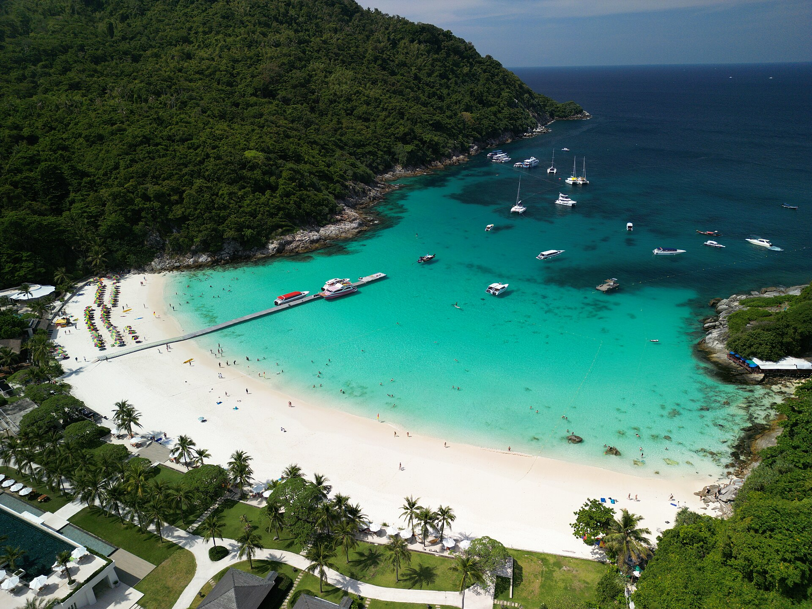
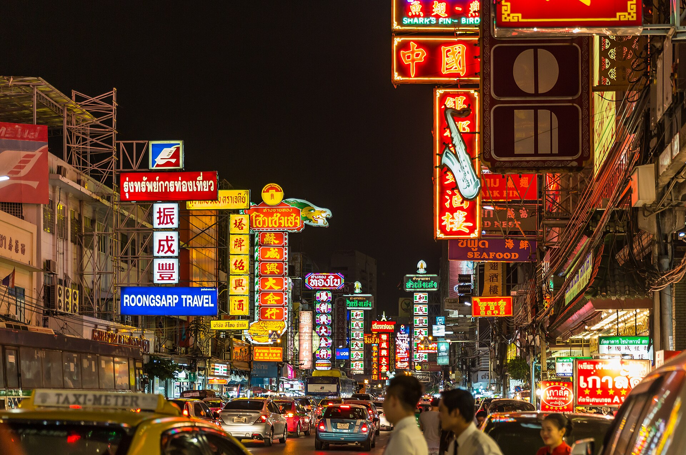

<!doctype html>
<html lang="zh-CN">
<meta charset="utf-8">
<meta name="viewport" content="width=device-width,initial-scale=1">
<title>泰国五天四晚｜选一条路线</title>
<style>
*{box-sizing:border-box}body{margin:0;background:#f6f3eb;color:#142e2a;font:16px/1.6 system-ui,sans-serif}main{max-width:1440px;margin:auto;padding:clamp(24px,5vw,80px)}header{margin-bottom:clamp(20px,4vw,48px)}.meta{font-size:.78rem;font-weight:700;letter-spacing:.13em}h1{font-size:clamp(2.8rem,8vw,7rem);line-height:1.03;letter-spacing:-.07em;margin:.12em 0}.routes{display:grid;grid-template-columns:1fr 1fr;gap:12px}.route{min-height:clamp(330px,46vw,620px);display:flex;align-items:flex-end;position:relative;overflow:hidden;isolation:isolate;color:white;text-decoration:none;background:#143d3b}.route img,.route:before{position:absolute;inset:0;width:100%;height:100%;object-fit:cover;z-index:-2}.route:before{content:"";background:linear-gradient(180deg,transparent 25%,#071815df 100%);z-index:-1}.route img{transition:transform .35s}.route:hover img{transform:scale(1.045)}.route:focus-visible{outline:3px solid #087b61;outline-offset:4px}.copy{width:100%;padding:clamp(22px,4vw,52px);position:relative}.name{display:block;font-size:clamp(2rem,5vw,5rem);line-height:1.12;font-weight:800;letter-spacing:-.06em;margin:.12em 0 .2em}.caption{display:block;padding-right:42px}.arrow{position:absolute;right:clamp(18px,4vw,48px);bottom:clamp(22px,4vw,52px);border:1px solid #fff9;border-radius:50%;width:40px;height:40px;display:grid;place-items:center}footer{margin-top:16px;font-size:.75rem}footer a{color:inherit}@media(max-width:670px){.routes{grid-template-columns:1fr}.route{min-height:330px}}@media(prefers-reduced-motion:reduce){.route img{transition:none}}
</style>
<main>
<header><p class="meta">2027 年 1 月　/　苏州出发</p><h1>泰国五天四晚</h1></header>
<nav class="routes" aria-label="选择旅行路线">
<a class="route" href="./phuket.html"><div class="copy"><span class="meta">PLAN A</span><span class="name">普吉岛</span><span class="caption">皇帝岛浮潜 · 卡塔海滩 · 普吉老城</span><span class="arrow" aria-hidden="true">↗</span></div></a>
<a class="route" href="./bangkok-samet.html"><div class="copy"><span class="meta">PLAN B</span><span class="name">曼谷＋沙美岛</span><span class="caption">唐人街夜色 · 沙美岛住两晚</span><span class="arrow" aria-hidden="true">↗</span></div></a>
</nav>
<footer>摄影 <a href="https://commons.wikimedia.org/wiki/File:Racha_Yai_Island.jpg">ELPHUKET</a>（<a href="https://creativecommons.org/licenses/by-sa/4.0/">CC BY-SA 4.0</a>） · <a href="https://commons.wikimedia.org/wiki/File:Yaowarat_at_night_(32455695783).jpg">Ninara</a>（<a href="https://creativecommons.org/licenses/by/2.0/">CC BY 2.0</a>）。照片按屏幕比例裁切。</footer>
</main>
</html>
